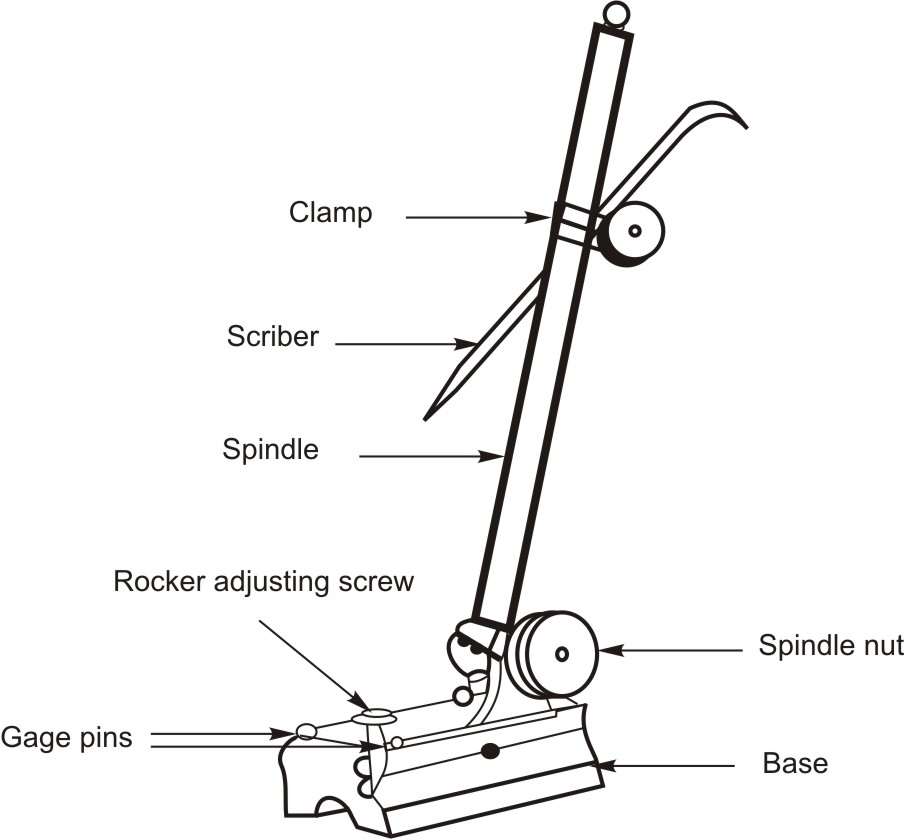
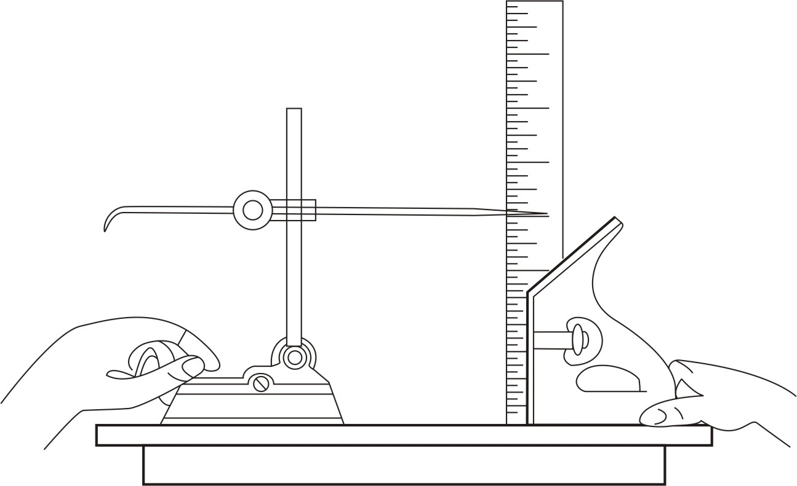
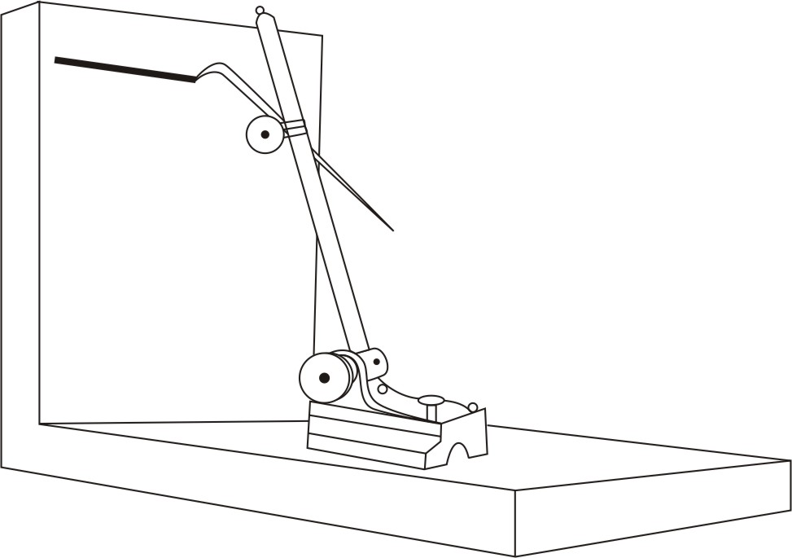
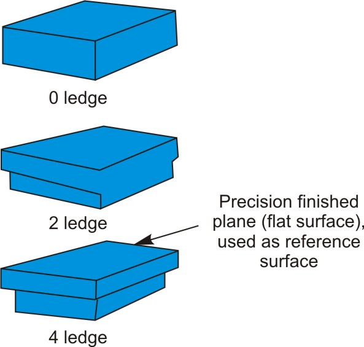
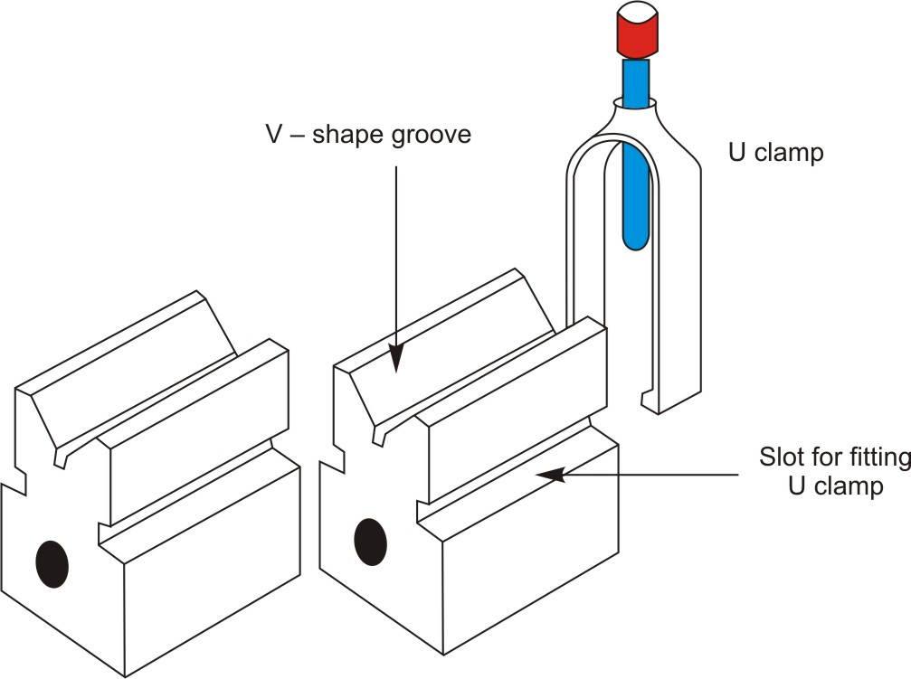

A surface gage is used for many purposes, but is most often used for layout work. The gage can be used to scribe layout lines at any given distance parallel to the work surface. The spindle may be adjusted to any position with respect to the base and tightened in place with the spindle nut. The rocker adjusting screw provides for finer adjustment of the spindle by pivoting the spindle rocker bracket. The scriber can be positioned at any height and in any desired direction on the spindle by adjusting the scriber. A surface plate and combination square are needed to set the surface gage to the correct dimension.

Figure 1: Surface gage
Figure 2: Setting a surface gage on surface plate to a specified height
Figure 3: Surface gage used to scribe parallel lineVery flat surfaces are needed when setting up height or angle measurements. This is because the measuring instruments are moved across the surface, and if the height varies, accuracy will suffer. Typical plates are made from cast iron, or granite. A typical plate might be 2 feet by 2 feet in area.
A surface plate provides a true, smooth, plane surface. It is used in conjunction with surface and height gages as a level base on which the gages and the workpiece are placed to obtain accurate measurements. The flat surface is used as a reference point or surface. These plates are made of semi-steel or granite and should never be used for any job that would scratch or nick the surface.
The surface plate is an auxiliary accessory. As an accessory it is combined with other tools, measuring instruments and test equipment. It is universally used to provide a reference surface. The surface plate is essential to layout and measurement processes. Figure below provides examples of popular manufactured surface plates. A surface plate may be a simple, flat plate that has been accurately machined. The term usually refers to a plate that has been machined and scraped to an extreme accuracy or ground to a fine surface finish. The underside is honeycombed with a number of webbed sections. These prevent the surface plate from warping, thus providing a permanent flat surface.

Figure 4: General styles of precision granite surface platesThe granite surface plate is used extensively today. Such a surface plate has a number of advantages over the cast iron type:
It is a rectangular block of hardened and ground steel. V-blocks are widely used to hold cylindrical parts for layout, for locating and drilling holes in cylindrical workpieces and also for checking the angles of 45 degree or 90 degree of workpiece surfaces. It has V-shaped angular surfaces, which form 90 degree angle and are central with the sides of the block. Round workpieces of different diameters may be centered and nested in V-blocks. Slot cut in both sides of the block enable the use of U-shaped clamp holding the cylindrical workpiece in the position.

Figure 5: V-block set| ← Tutorial 13 | Tutorial 15 → |